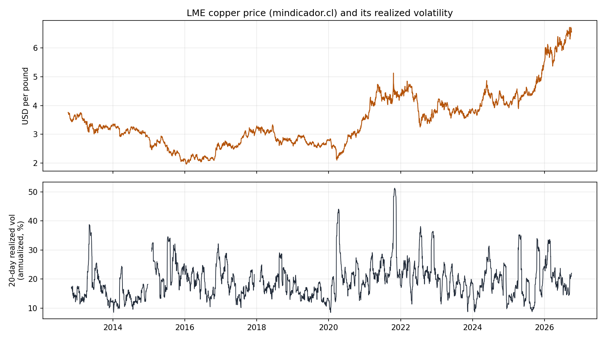
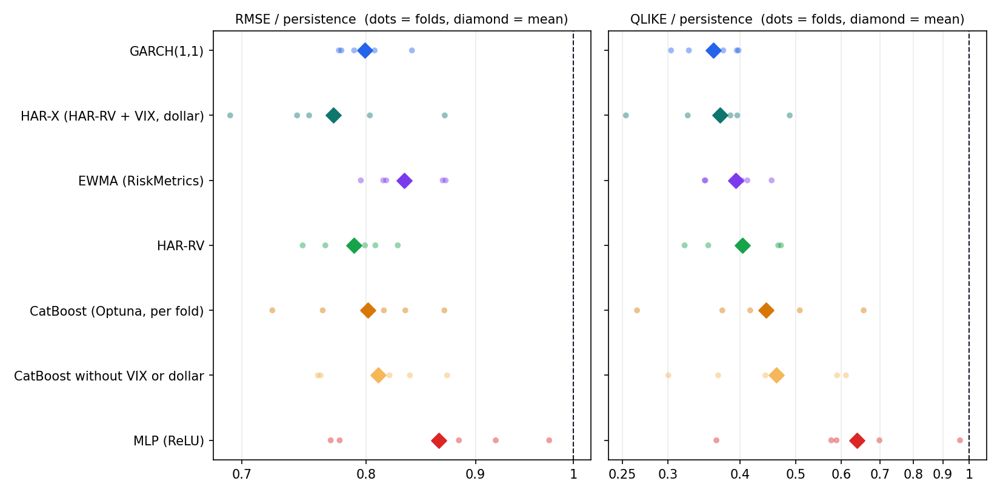
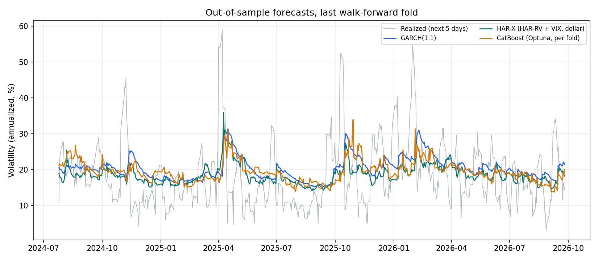
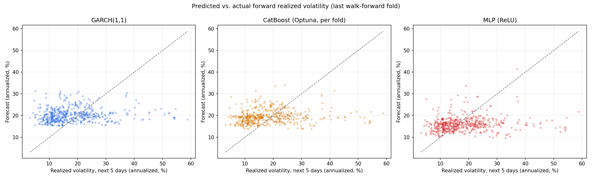
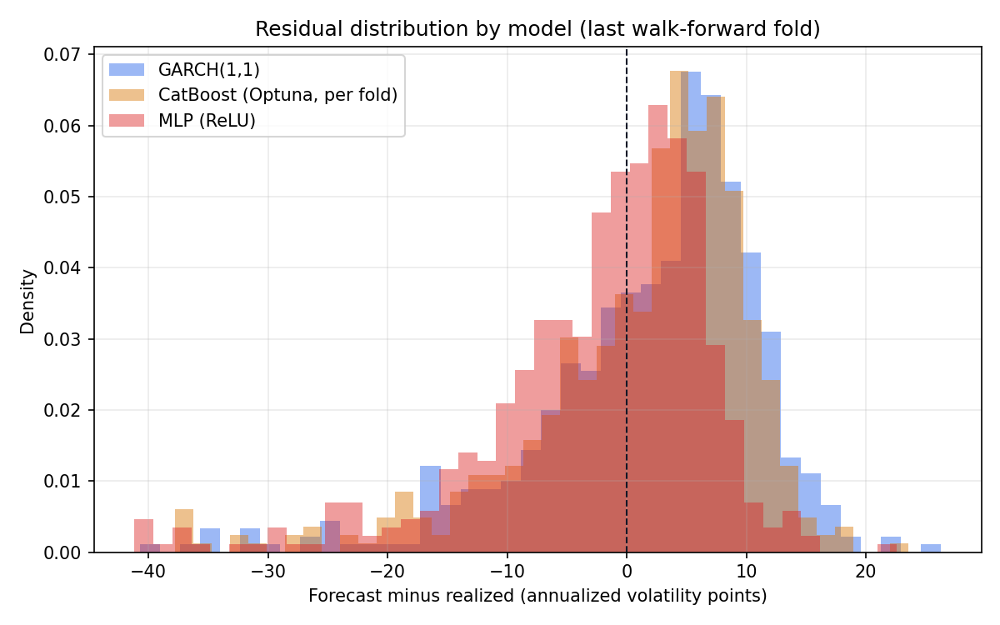
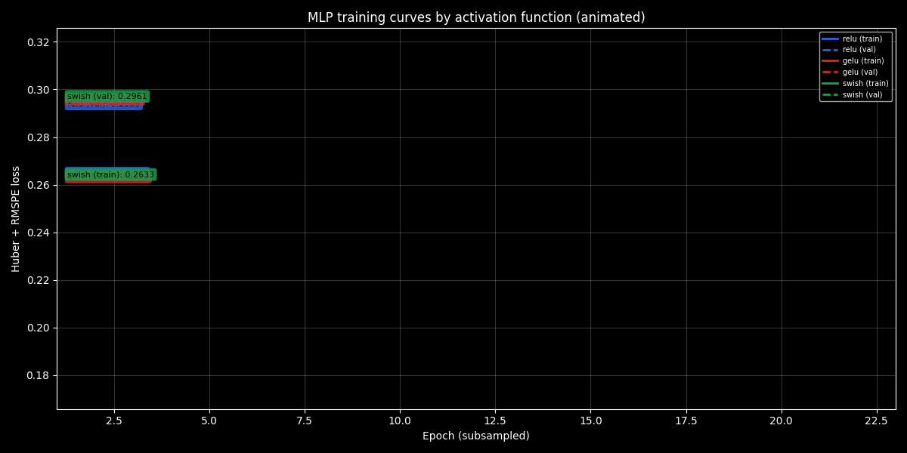
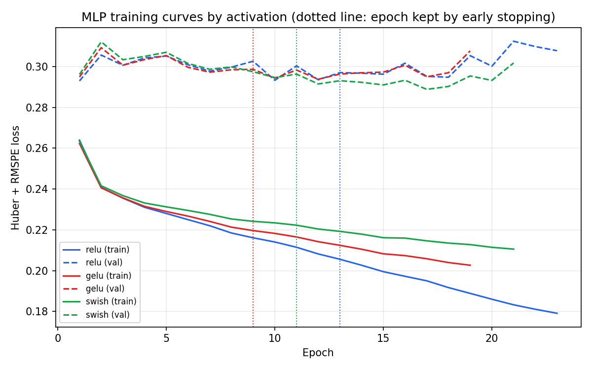

On 14 years of real London Metal Exchange copper prices, a GARCH(1,1) from 1986 forecasts next week's volatility as well as anything else I tested: a CatBoost tuned with Optuna inside every walk-forward fold does not beat it, and the only model that ties it is a linear HAR-RV with the VIX and the dollar index added.
This page shows the project's results. The methodology, the design decisions and the limitations are documented in the repository's README.
Data

Fourteen years of the LME price and its 20-day realized volatility, which averages about 21% a year and spikes to 44% in April 2020 and 51% in November 2021, after the October 2021 squeeze on the LME's nearby contracts.
Results

Each model's RMSE and QLIKE divided by persistence's, fold by fold, on a log scale: GARCH, HAR-X, HAR-RV and EWMA cluster together, CatBoost keeps up on RMSE but trails on QLIKE, and the MLPs sit closest to persistence.

The last fold, July 2024 to September 2026: the three best models follow the level of volatility, but none sees a spike coming, the April 2025 one included; they react afterwards. That is the limit of what a five-day volatility forecast can do.
Third approach: PyTorch MLP (activation comparison)

Forecasts against realized volatility in the last fold: every model compresses its forecasts into a narrow band, because most of a single week's volatility is noise that no forecast can follow.

The errors are skewed: the models over-forecast calm weeks by a few points and under-forecast the rare turbulent ones by much more, which is exactly what QLIKE penalizes.

Training and validation loss per epoch, drawn as the training happened.

The same curves with the epoch kept by early stopping marked: training loss keeps falling while validation loss stays flat around 0.30 from the first epochs.